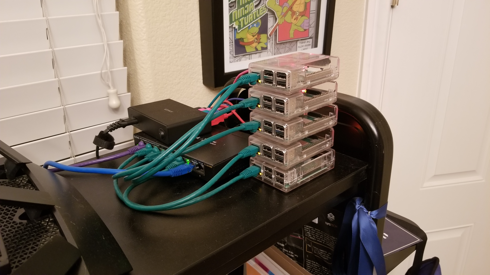

The Cluster

So one morning I woke up and went on to the internet and was looking at prices for cloud computing for a project I was getting ready start. Cloud computing has gotten super cheap over the years and it has made the power of a datacenter available to so many people. Then I got to thinking, what would it take for me to build a cloud in my home. Crazy I know. Overkill probably. Worth the knowledge I gained most defintely. So take a moment grab a cup of coffee and join me on a journey of building my own personal cloud.
Now to be clear. This is just a starting point. A cluster is most defintely not a “cloud” but it is what I consider a good first step. In the image above you see my desk. A mess I know. My wife reminds me of that every time she cleans my desk (Once every 6 months or so (of her own free will)). That is besides the point. The parts on the edge of the desk are the important bit. These are parts I picked out for a small home cluster. Now explaining to my CFO (my wife) why I needed all these parts was another task. I can not help you there. Although I think she got it. That or got tired of me asking. Here is the list for all those items:
- 5 raspberry pi modal 3 b+
- 6 cat 6 network cables (one to connect the router to the switch)
- 1 8 port switch
- 1 usb power hub (the one in the pic did not work. I went with a 10 port anker power hub from amazon)
- 5 usb cables
- 5 pi cases
- 5 32gb micro sd cards
Now the question I get the most besides why did I build my own cluster is why did I choose the raspberry pi. Well frankly because it is cheap, all 5 running pulls hardly any power, and they are very capible machines for all the tasks I have thought of for my home projects. Now that first question is pretty much why not?! I learned a lot working on this project and also I have given talks on this technology at meetups and conferences so I should know how to install it from scratch rather then just run it in the cloud all the time. Atleast that is my view point. Any way back to the task at hand. We have the parts, the CFO is confused, my room mate is sleeping, LETS GET TO WORK!
So this was not just out of the blue. No pun intended. I had gotten a Pi model 3 b (no +) for christmas a year or two before this project from my wife. I tinkered with it so much, turning it into a pi hole, retropi, etc.. Then I came across Alex Ellis, the creator of OpenFAAS. He had a bunch of blog posts about spinning up kubernetes on the pis. He also had a very easy to follow guide (Link to the Guide). Now if you take a look through that guide you will see it is pretty simple. I remember when I first saw that guide it did not mention K3s. It was easy to follow and had all the shell scripts you need to get up and running. Fast foreward to to now. That guide mentions K3s. I have enjoyed that project. It now runs on my cluster. It was easy enough to tear down the old cluster run a couple of the curl bash (yes I know, bad) commands and boom you have a cluster. I mean it really is that easy. Then I just ran all my kubernetes configs against it and it was up in running in about 15 minutes. Most of that was reading docs.
There were some steps before that though that we just skipped over. Lets start from the beginning. So first things first I started opening all the goods. The cases, pis, cabels, sd cards, switch, and power supply. Once I had all that open I had to set it all up. Well first I download raspbain stretch lite off of the offical raspberry pi foundation site. After that took about 20 or 30 minutes to flash every sd card. Really was mind numbing waiting for all them to flash, see if you can get the multiflash thing from the people that make etcher. That will make your life 1000% easier here. Also while flashing to get ssh enabled so you dont have to connect a monitor and keyboard to all the pis for the intial setup is just going into the boot partition of each sd card and creating a blank ssh file with no extesion (heard windows likes to add them even though you dont see them). After that I connected the switch to my laptop and configured it to my subnet and gave it an ip outside of my dhcp range. You can avoid that if you buy a managed switch. Then it was just wiring it all up and turning on the pis. I used my router to see what ip they all got in the dhcp pool and just went through and updated each pi and gave them a static ip. After that I copied over my ssh key to make it so I can login without a password. Then I googled how to harden the pi setup and went through the first 5 or so articles and guides and followed what made since. Such as making the pi user require a password for sudo and down also just removing that user once I made my own admin. Then after that you just follow the K3s guide then you should be done at that point.
Now I have this cluster. You are probably wondering what I run on it. Right now it is just host my DNS server. I use CoreDNS with the host plugin and the cache plugin to give all my machines domain names so I dont have to remember the ip addresses. I am aiming for everything to be dhcp as well. More on that later once I have figured it out. So all and all I am happy with it and I plan to try to put other things on the cluster in the future and if I see interest I will plan to write a post on software I deploy on it.